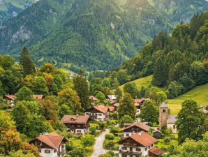

Les ruches
Installées dans les collines de thym sauvage du Rif, elles donnent notre miel de thym ambré.
Notre histoire
Depuis 2015, 25 femmes de la région de Nador récoltent, transforment et conditionnent elles-mêmes les produits du terroir.
Créée en 2015 dans la région de Nador, la coopérative Thimdrine réunit 25 femmes qui récoltent, transforment et conditionnent elles-mêmes leurs produits.
Nos ruches sont installées dans les collines de thym sauvage du Rif, nos oliviers poussent sur les terrasses familiales et nos figues de barbarie sont cueillies à la main chaque été.
Du champ jusqu'au pot, chaque étape est réalisée par nos membres, sans additifs, pour vous proposer des produits authentiques.

Trois terroirs, trois récoltes, un même soin du travail fait main.
Installées dans les collines de thym sauvage du Rif, elles donnent notre miel de thym ambré.

Ils poussent sur les terrasses familiales et fournissent notre huile d'olive extra vierge.

Cueillies à la main chaque été, elles sont transformées en confiture en petites quantités.
Récolte, transformation et mise en pot sont assurées par les femmes de la coopérative.
Des produits simples et naturels, du champ jusqu'à votre table.
Nous travaillons dans la région de Nador et vendons sur les marchés de la ville.
Envoyez-nous votre demande de commande : nous vous répondons sous 48 heures.
Faire une demande de commande